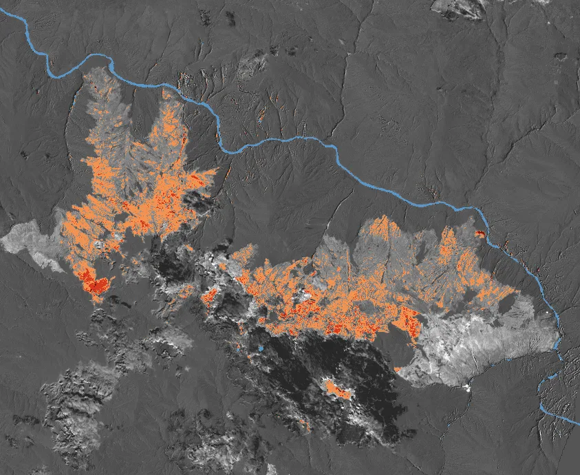

Pregunta
¿Qué parte de los focos de calor de la temporada 2026 cae sobre las zonas que producen agua (cabeceras de cuenca, lagunas, ríos y humedales), cómo se compara con 2012–2025 y en qué departamentos se concentra?
Datos y método
Focos de calor de NASA FIRMS e INPE, cobertura del suelo de ESA WorldCover, relieve de Copernicus DEM e imágenes Sentinel-2 para medir el área quemada (dNBR). Corte de datos: 22 de octubre de 2026.
Resultado
El 24 % de los focos de la temporada cayó en zonas que producen agua: 32.701 de 135.171.
- Puno concentra más focos en zonas de agua: 4.011, el 85,8 % de los suyos.
- El incendio de Curahuasi (Abancay, Apurímac) quemó 1.115,5 ha según Sentinel-2.


Reel
El fuego y el agua
El 24 % de los focos de 2026 cayó en zonas que producen agua.
Voz generada con IALa narración es mi propia voz clonada con IA (Qwen3-TTS).